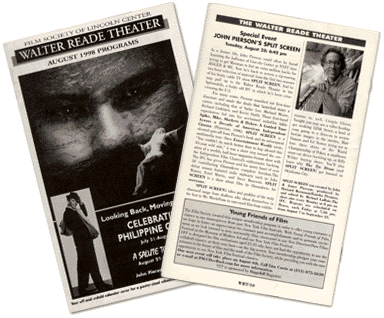

In a former life, John Pierson could often be found haunting the hallways of Lincoln Center at NYFF time trying to get Miramax to bid an extra million bucks for ROGER & ME. Now he's back to screen a rip-roaring two-hour selection of material from the first two seasons of his feisty cable TV show SPLIT SCREEN. And he may pull up to the Walter Reade Theater in the Splitmobile, a funky old RV in which he's been crisscrossing the U.S. For many years, Pierson searched out first-time directors and made the deals that launched many a career, including that of Spike Lee, Michael Moore, Richard Linklater, and Kevin Smith. Those first-hand experiences fed into his acclaimed indiefilm bible Spike, Mike, Slackere & Dykes: A Guided Tour Aeross a Decade of American Independent Cinema (Hyperion, 1996). SPLIT SCREEN is a skewed spin-off from Pierson's book and its subsequent multimedia tour. Once Entertainment Weekly wrote, "You couldn't do much better than to hop aboard this 10-year wild ride," it was a short step toward the creation of a weekly, half-hour magazine-format show with the Independent Film Channel's enthusiastic backing. The IFC has given Pierson and his merry band of over 50 contributing filmmakers complete freedom.The debut season featured indie stalwarts such as John Waters, Errol Morris, and Steve Buscemi. SPLIT SCREEN is a show about film, by filmmakers, for everyone. SPLIT SCREEN's tales and profiles of the truly obsessed range from draftees who shoot themselves in the foot to Mr. MovieFone to one-eyed film-loop exhibitionists to, well, Crispin Glover. Tonight you may see a video bootlegger working 125th Street, a herd of cows going to a drive-in to review bovine images in the movies, Matt Damon and Ed Norton trying not to lose their shirts at the World Championship of Poker, a smalltown stunt car driver buckling up, or Billy Wilder buying shoes. You'll also learn why The Tin Drum (and SPLIT SCREEN) got banned in Oklahoma City. SPLIT SCREEN was created by John & Janet Pierson, produced by Howard Bernstein/Eureka Pietures, and edited by Michael LaHaie.The show airs every Monday at 8 pm on IFC. Repeats are scheduled on Bravo, each Friday at 7:30 pm, from August 7 to September 25. |

